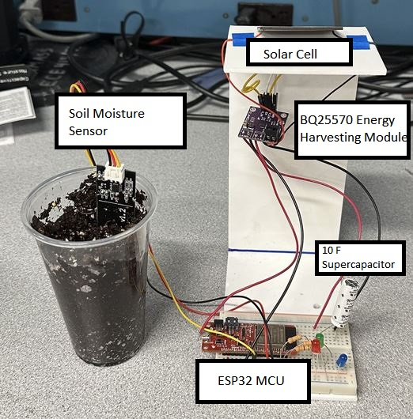

Solar Powered, Battery Free Soil Moisture Sensor
This was the final group project for my class ECE 697LP - Design Principles for Low Power Embedded Systems, which I took during the spring semester of my senior year at UMass. In this course, we spent the first 12 weeks reading, presenting, and discussing recent academic papers on low power embedded systems. The class culminated in a final project in which we devised and prototyped a novel low power sensing application.
My group had two motivations for this project. The first was to develop a sensing application powered by a solar cell for energy harvesting and a supercapacitor for energy storage. Batteries can be harmful to the environment, both in their production, through practices like lithium mining, and at the end of their lifetime, due to improper disposal. De Winkel et al. argue in their 2020 paper on the Battery-Free Gameboy that removing components of high environmental impact like batteries from systems without sacrificing usability is important [1]. Aside from the environmental aspect, the electrical characteristics of supercapacitors can be more favorable than batteries in certain applications. In Repurposing Cathodic Protection Systems as Reliable, in-situ, Ambient Batteries for Sensor Networks, Panuto et. al choose a supercapacitor over a battery for its allowance of wide voltage ranges and unlimited charge cycles [2]. These environmental and functional benefits of supercapacitors were the reason we wanted to power our sensing application in this way, as opposed to using a battery.
The second motivation for this project was to test the energy harvesting module available here. This module is designed around the Texas Instruments BQ25570, a chip that integrates a boost charger and buck converter for extracting energy from high output impedance sources like the solar cell used in this project [3]. Although the BQ25570 datasheet is well-written, the module’s technical documentation is almost nonexistent. Likewise, if we could discover and document how to use the module without damaging it, it could open the door to future 697LP projects that also wish to explore energy harvesting and intermittent power.
Our prototype revolved around a BQ25570 energy harvesting breakout board that uses solar energy to charge one internal 0.22 F and one external 10 F supercapacitor in parallel. Without a battery, it was important that the capacitors could power our low power device sufficiently, to allow for the intermittent sensing. We chose an ESP32 WROOM 32E development board for our microcontroller, which could function with an input voltage between 3-3.6V and could be easily programmed in Arduino.
A few modifications had to be made to the energy harvesting module in order for it to be better suited for our application. The first of which was altering the resistor values of the VOUT_SET voltage divider, which can be observed in the bottom middle of the schematic shown below. Out of the box, this divider was composed of a 1 MΩ resistor and a 887 kΩ, which resulted in a VOUT of 1.2 V. This was far too low for our application, so the 887 kΩ resistor, R8, was desoldered from the board and swapped for a 499 kΩ resistor, which resulted in a calculated VOUT of 3.635 V. As demonstrated in one of the demo videos, the module successfully outputted ~3.658 V after swapping out R8.
The image to the bottom right shows the proof of concept for our proposed system. The solar cell sits atop the stand and charges the EH module on the purple PCB below it. There are four header pins on the module; the EN and GND pins are jumpered together, as the BQ25570 turns on after the EN pin is pulled actively low. The V_OK pin was jumpered to the V_EN pin to disable the internal buck converter so the board could output our resistor-programmed voltage. The module has two more external connections, the first of which is to the 10 F supercapacitor on the top right portion of the breadboard. Once this capacitor is charged to ~3.5 volts, the module begins outputting a voltage to the ESP32 microcontroller, which is also on the breadboard. This MCU reads moisture sensor data and lights up one of the three LEDs accordingly. The demo video can be found here.
Image Gallery
Circuit Schematic for the TI BQ25570 breakout module.

System overview.